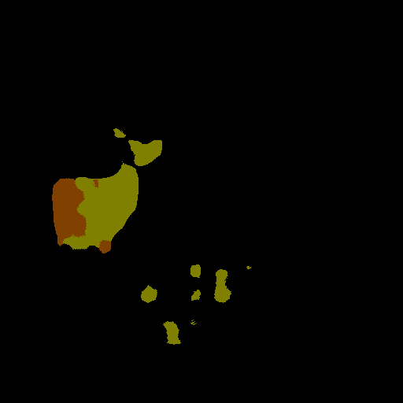
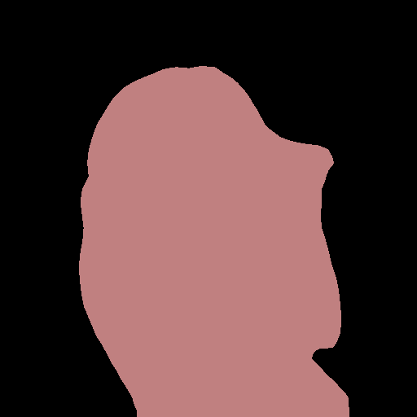
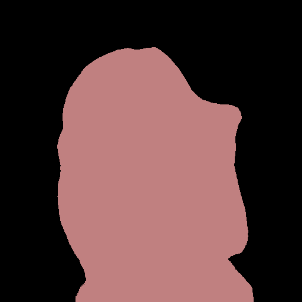
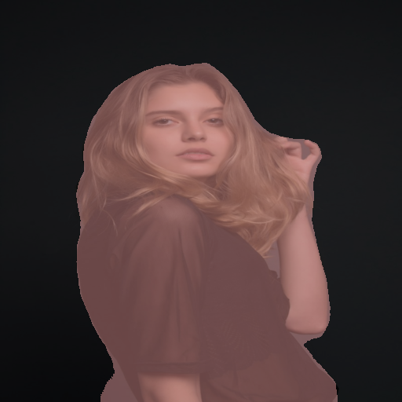
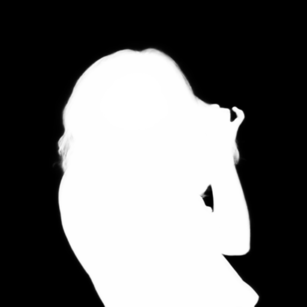
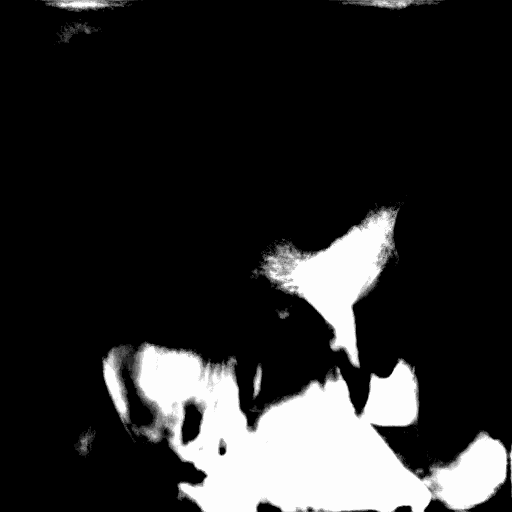
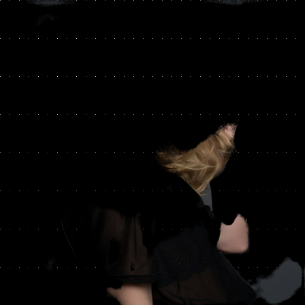
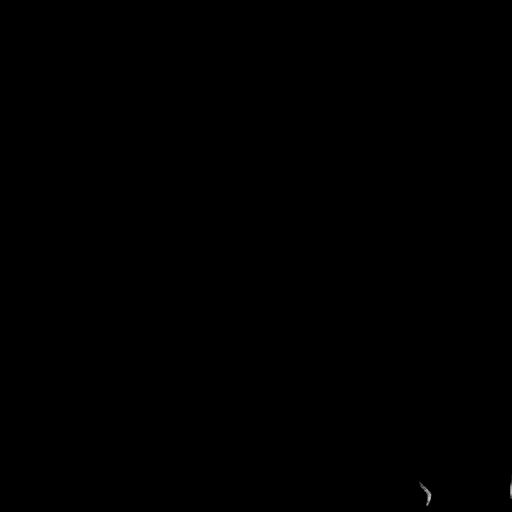
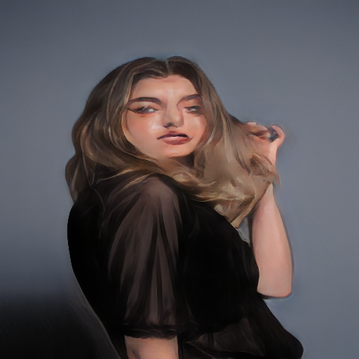
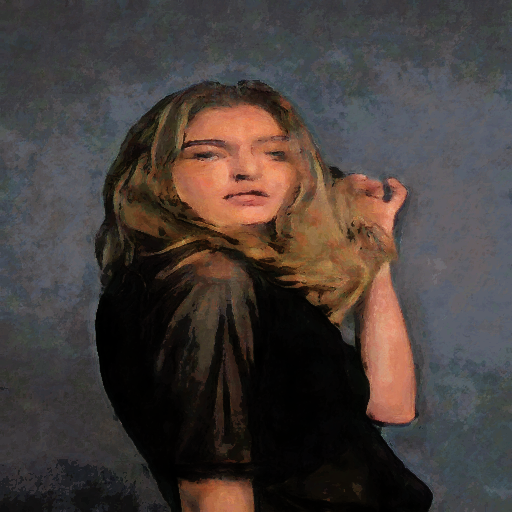

又找了一批"有趣"的 CNN 上 NPU，结果挺出乎意料
Ryzen 7 8845HS · XDNA1 NPU (Phoenix 16 TOPS, 4x4.xclbin) + Radeon 780M iGPU + 8 核 Zen4 · RyzenAI 1.7.1 / onnxruntime-vitisai 1.23.3 · 全部 INT8(XINT8) · 稳态延迟（warmup 5 + 20 次均值）
本轮新测：5 个趣味模型（统一口径：8 线程 CPU）
| 模型 / 任务 | 输入 | NPU INT8 (ms) | CPU INT8×8T (ms) | NPU vs CPU-INT8 | CPU FP32×8T (ms) | NPU vs CPU-FP32 | iGPU FP32 780M (ms) | NPU 子图 切分 |
|---|
NPU 子图切分 = VitisAI EP 编译缓存(context.json)中落在 NPU 上的子图数 / 总节点数。
老模型同口径复测（此前数据的统一基准）
| 模型 / 任务 | 输入 | NPU INT8 (ms) | CPU INT8×8T (ms) | NPU vs CPU-INT8 | iGPU FP32 780M (ms) | ||
|---|---|---|---|---|---|---|---|
| MobileNetV2 分类 | 1×224×224×3 | 2.84 | 11.99 | ×4.22 | — | — | — |
三个结论：
1. XDNA1 并非处处香：对小而规整的模型（ResNet50/MobileNetV2/RCAN/YOLOv8m）NPU 确实快 CPU 3~7 倍； 但 512×512 的分割、抠图、风格迁移、超分一上来，8 线程 Zen4 CPU 跑 INT8 就能反超 NPU。
2. 性能杀手是"子图碎片化"：LRASPP 整图 1 个子图 682 节点 → 27.7ms 真加速； AnimeGANv2 被切成 40 片、Real-ESRGAN 81 片，每片都要 NPU↔CPU 搬运 → 反而比 CPU 慢 4~6 倍； MODNet 更惨，EP 直接 0 子图全回退，还倒贴开销。
3. iGPU 780M 才是本机视觉模型的隐藏王者：FP32 跑这些大模型全面碾压 NPU（抠图 30ms vs 454ms，动漫化 178ms vs 3658ms）， 甚至比 NPU 快 20+ 倍。只有小分类模型（ResNet50 10.6ms vs NPU 5.2ms）NPU 还能保住优势。
1. XDNA1 并非处处香：对小而规整的模型（ResNet50/MobileNetV2/RCAN/YOLOv8m）NPU 确实快 CPU 3~7 倍； 但 512×512 的分割、抠图、风格迁移、超分一上来，8 线程 Zen4 CPU 跑 INT8 就能反超 NPU。
2. 性能杀手是"子图碎片化"：LRASPP 整图 1 个子图 682 节点 → 27.7ms 真加速； AnimeGANv2 被切成 40 片、Real-ESRGAN 81 片，每片都要 NPU↔CPU 搬运 → 反而比 CPU 慢 4~6 倍； MODNet 更惨，EP 直接 0 子图全回退，还倒贴开销。
3. iGPU 780M 才是本机视觉模型的隐藏王者：FP32 跑这些大模型全面碾压 NPU（抠图 30ms vs 454ms，动漫化 178ms vs 3658ms）， 甚至比 NPU 快 20+ 倍。只有小分类模型（ResNet50 10.6ms vs NPU 5.2ms）NPU 还能保住优势。
效果实拍（全部在 NPU 上跑出，除非标注）
LRASPP-MobileNetV3 · 语义分割
PASCAL VOC 21 类像素级分割。整个模型被 EP 编译成 1 个 NPU 子图，是本轮唯一“整图上 NPU”的新模型。
INT8 vs FP32 像素分类一致率 95.2% · 分割到：background、bird、sheep、motorbike、horse

DeepLabV3-MobileNetV3 · 语义分割
同样 21 类，但 ASPP 金字塔带空洞卷积。697 个节点几乎全进了 NPU，151ms 仍慢于 8 线程 CPU；INT8 用 PowerOfTwo 快速标定会全崩（整图全背景），换 MinMSE 标定后恢复（下方效果图为修复版）。
INT8 vs FP32 像素分类一致率 99.1% · 分割到：background、person




MODNet · 人像抠图
人像软抠图。EP 直接放弃编译（0 个子图，全 CPU 兜底）还倒贴开销；INT8 换了两轮标定方法输出都接近全零，这种 InstanceNorm+软上采样结构基本无法 INT8 化。
PSNR 5.5 dB · MAE 76.5/255





AnimeGANv2 · 动漫风格化
日系动漫风格化。被切成 40 个碎片子图（最大仅 22 节点），每片都要 NPU↔CPU 搬运，3.7s/帧；好在视觉质量基本保住。
PSNR 20.1 dB · MAE 21.3/255


Real-ESRGAN ×4 · 超分
RRDB 结构 4 倍超分。81 个碎片子图，被搬运开销拖垮；iGPU 只要 169ms。
—
复现方式：每个模型先用
onnxsim 固化静态 shape，再用 amd-quark 0.11 静态量化
（XINT8：激活 UINT8 / 权重 INT8，PowerOfTwoMethod 标定，16 张本地图片）；NPU 会话为
VitisAIExecutionProvider + 4x4.xclbin，编译缓存命中后计时。
FP32 参考用 CPU EP 同图推理。DeepLabV3 与 MODNet 的 INT8 版出现严重退化（前者全背景、后者输出近全零），
说明 PowerOfTwo 快速标定对这两类结构不够——要用 MinMSE + 更大标定集才有救。